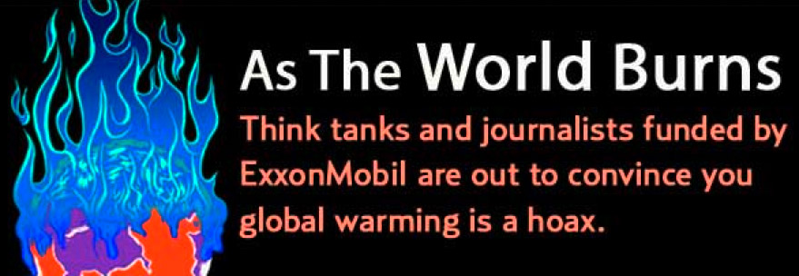

|
"The debate on the authenticity of global warming and the role played by human activity is largely nonexistent among those who understand the nuances and scientific basis of long-term climate processes."—Examining the Scientific Consensus on Climate Change PDF
|
- The Dirty Dozen of Climate Change Denial
- A guide to the loudest components of the climate disinformation machine.
- 40 public policy groups
- Seek to undermine the scientific consensus that humans are causing the earth to overheat and they all get money from ExxonMobil.
- Exxon-Funded Skeptics
- The Exxon corporation has long been involved in creating confusion regarding global warming and the creation and funding of Global warming skeptics.
- Koch Industries: Secretly Funding the Climate Denial Machine
- The Koch brothers, their family members, and their employees direct a web of financing that supports conservative special interest groups and think-tanks, with a strong focus on fighting environmental regulation, opposing clean energy legislation, and easing limits on industrial pollution.
- Inside Koch's Climate Denial Machine
- Koch's extensive funding of anti-climate work makes it the financial kingpin of climate science denial and clean energy opposition.
"Climate change denial has been so effective because the “denial community” has mischaracterized the necessarily guarded language of serious scientific dialogue as vagueness and uncertainty. Mainstream media outlets, attacked for being biased, help lend credence to skeptics’ views, regardless of their scientific integrity, by giving them relatively equal standing with legitimate scientists. ExxonMobil is responsible for much of this bogus scientific “debate” and the demand for what the deniers cynically refer to as “sound science.”—Senators Demand that the World’s Largest Oil Maker Make Public Its History of Funding Climate Change “Skeptics”
Climate Zombies
» FEED — SITE
The Last Stand of the Climate Zombies
Toomey's Not A Witch, Either
"To stop climate change, vote GOP."
Climate hawks attack! Ken Buck cowers?
"the John Birch Society was extreme, too."
Climate Zombies of the Gulf Coast
Climate Zombies of AR, IL, MI, NE, ND
Climate Zombies of HI, ID, MN, MT, OR, WY
Solved: The Curious Case of Cal Oil Cos Who Sat Out Prop 23.
"The James Buchanan of Climate Change"?
Climate Zombies Infect ME, Assault NJ
Climate Zombies of KS, NV, RI, SD, TN
Will Whitman Join Cal's Climate Zombie Prop 23 Supporters?
Patient Zero and Climate Zombies of CO, NC
Deep in the Heart of Climate Zombieland
California Unites Against Proposition 23.
Climate Zombies in IA, MO, UT, VT, and WA
The Climate Zombies of the New GOP
"
ExxonMobil has spent more than $19 million since the late 1990s on a strategy of “information laundering,” or enabling a small number of professional skeptics working through scientific-sounding organizations to funnel their viewpoints through non-peer-reviewed websites...The Internet has provided ExxonMobil the means to wreak its havoc on U.S. credibility, while avoiding the rigors of refereed journals. While deniers can easily post something calling into question the scientific consensus on climate change, not a single refereed article in more than a decade has sought to refute it. Indeed, while the group of outliers funded by ExxonMobil has had some success in the court of public opinion, it has failed miserably in confusing, much less convincing, the legitimate scientific community."—
Senators Demand that the World’s Largest Oil Maker Make Public Its History of Funding Climate Change “Skeptics”
"In light of the adverse impacts still resulting from your corporation’s activities, we must request that ExxonMobil end any further financial assistance or other support to groups or individuals whose public advocacy has contributed to the small, but unfortunately effective, climate change denial myth."—
Senators Demand that the World’s Largest Oil Maker Make Public Its History of Funding Climate Change “Skeptics”
